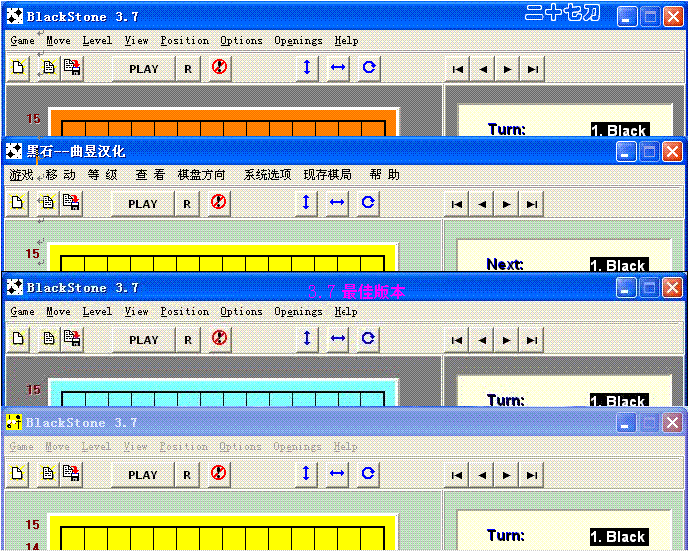
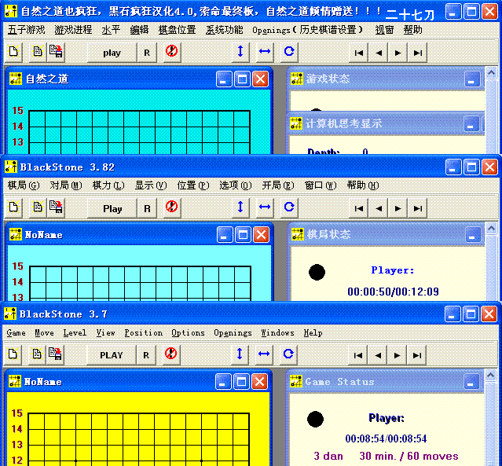

黑石大全图+3.7全版下载
#1 黑石大全图+3.7全版下载 作者：二十七刀 发表时间：2009-4-30 23:14:18
3.7免安装版本

3.8 安装版本

 黑石3.7橙色版本.rar
黑石3.7免安装黄色版本.rar
黑石3.7英文原版.rar
黑石汉化3.7.rar
黑石3.7橙色版本.rar
黑石3.7免安装黄色版本.rar
黑石3.7英文原版.rar
黑石汉化3.7.rar
［ 茗弈小刀 于 2009-5-1 18:58:30 时花20金币送鲜花一朵］
#2 Re:黑石大全图+3.7全版下载 作者：流逝 发表时间：2009-5-1 0:34:58
 我喜欢3.7橙色版本
我喜欢3.7橙色版本
#3 Re:黑石大全图+3.7全版下载 作者：二十七刀 发表时间：2009-5-1 1:21:16
第3个最好,测试了下,性能和效果最佳［ 炫飞柳扶风 于 2009-5-1 1:32:01 时花20金币送鲜花一朵］
#4 Re:黑石大全图+3.7全版下载 作者：二十七刀 发表时间：2009-5-1 8:28:42
3.8安装版本计算时间比3.7免安装的要长,所以在哪个更好的问题上,应该是3.8的更好,而且可调试#5 Re:黑石大全图+3.7全版下载 作者：逆刃 发表时间：2009-5-1 8:42:16
我也觉得第三个最强，但是错误也很多。
#6 Re:黑石大全图+3.7全版下载 作者：刀魂 发表时间：2009-5-1 9:33:05
个人觉得，不管哪个版本的黑石一到了 中盘 就容易 崩盘，所以还是自己棋感的问题#7 Re:黑石大全图+3.7全版下载 作者：裁决殿雪月 发表时间：2009-5-1 11:47:59
那个索命版能发出来吗，呵呵#8 Re:黑石大全图+3.7全版下载 作者：二十七刀 发表时间：2009-5-1 17:23:09
给我多送花，我明天回学校发。#9 Re:黑石大全图+3.7全版下载 作者：极地剑客 发表时间：2009-5-1 17:37:11
3.7升级版的比那个第三个最佳版的要强噢~那个兰色的很多错杀~#10 Re:黑石大全图+3.7全版下载 作者：wd1988 发表时间：2009-5-1 21:00:25
楼上的，发出来发出来~顶#11 Re:黑石大全图+3.7全版下载 作者：极地剑客 发表时间：2009-5-4 2:29:56
楼上的~就是那个黄色的噢~以前上海的发过完整安装程序~用杰的注册机就可以搞定~#12 Re:黑石大全图+3.7全版下载 作者：雅典娜 发表时间：2009-5-4 8:30:11
感谢大家对本论坛的关注和支持!
#13 Re:黑石大全图+3.7全版下载 作者：刀魂 发表时间：2009-5-4 11:17:57
不知道 哪位猛人有 正版 黑石。。。
#14 Re:黑石大全图+3.7全版下载 作者：wd1988 发表时间：2009-5-4 11:21:24
有三个黄色呀，哪个最好？#15 Re:黑石大全图+3.7全版下载 作者：极地剑客 发表时间：2009-5-25 1:06:08
回楼上的,正数第三个.兰色下面那个黄色~#16 Re:黑石大全图+3.7全版下载 作者：冷面孤煞 发表时间：2009-5-25 12:32:02
 对于黑石的运用不是很清楚，哪个大虾教教？
对于黑石的运用不是很清楚，哪个大虾教教？
#17 Re:黑石大全图+3.7全版下载 作者：剑魔令狐冲 发表时间：2009-5-25 12:33:46
我一直都最喜欢第一个黑石 因为简单干脆 速度也快 是 杀人劫财 居家旅游 必备之凶器
#18 Re:黑石大全图+3.7全版下载 作者：极地剑客 发表时间：2009-5-29 10:13:58
回13楼~什么正版黑石噢~我下载了3.7原版和3.7升级版和3.82的安装程序~安装后用算序列号的注册了~使用区别不大~个人感觉就升级版的强悍些~#19 Re:黑石大全图+3.7全版下载 作者：巫山云雨 发表时间：2010-10-5 13:44:51
呵呵楼主很强大很用心不错谢谢#20 Re:黑石大全图+3.7全版下载 作者：潭影空随 发表时间：2010-10-5 14:55:51
黑石的局部计算力确实很强，但是它的大局观较差，中局后习惯性的盲目进攻，是它对棋局的掌控很不稳定，3.7和3.8一样的通病，错杀，漏杀很多，用来拆棋还行，实战就最好别用，用输得多！！！#21 Re:黑石大全图+3.7全版下载 作者：潭影空随 发表时间：2010-10-5 14:57:37
黑石的局部计算力确实很强，但是它的大局观较差，中局后习惯性的盲目进攻，是它对棋局的掌控很不稳定，3.7和3.8一样的通病，错杀，漏杀很多，用来拆棋还行，实战就最好别用，用输得多！！！#22 Re:黑石大全图+3.7全版下载 作者：巫山云雨 发表时间：2010-10-10 9:03:49
呵呵楼主我顶你个肺#23 Re:黑石大全图+3.7全版下载 作者：五子米猫 发表时间：2010-10-16 8:45:47
顶楼主！谢谢提供~#24 Re:黑石大全图+3.7全版下载 作者：等待恛憶 发表时间：2013-8-31 12:53:55
黑石3.82或者那山寨的4.0也发下呀楼主#25 Re:黑石大全图+3.7全版下载 作者：剑冢 发表时间：2014-9-5 9:56:01
第二个最好#26 Re:黑石大全图+3.7全版下载 作者：剑冢 发表时间：2014-9-5 9:58:42
第3个速度虽然很快，但是只有连珠妙手的水平，第4个最强，速度很慢，比第3个强多了，第3个2秒走1步棋，能强到那里去，还有黑石4.0找不到，其朴实车站和华军的都不行啊啊#27 Re:黑石大全图+3.7全版下载 作者：罗源棋手 发表时间：2014-9-5 17:34:49
感觉我下载的版本很废，忘了什么版本了，不知道正版的怎样。#28 Re:黑石大全图+3.7全版下载 作者：剑冢 发表时间：2014-9-6 6:57:50
是的#29 Re:黑石大全图+3.7全版下载 作者：剑冢 发表时间：2014-9-6 7:00:19
第5个和第6个我在win732和win764下都试过，不兼容，估计只有winxp兼容，第2个和第3个我在win764试过，不兼容，32位兼容，其它3个在win764兼容